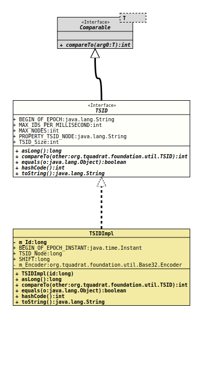

- All Superinterfaces:
Comparable<TSID>
- All Known Implementing Classes:
TSIDImpl
The definition for a 64-bit time-based and time-sorted unique id.
The idea behind this implementation of a unique key is to have a shorter
version of a unique key as that provided by the class
UUID
with its 128-bit length.
In addition, the text representation of a TSID can also be used for XML and HTML ids (an XML id may not begin with a digit).
A TSID has a 42-bit timestamp – the milliseconds since "2022-01-01T00:00:00.000Z", a 12-bit counter (the number of ids that can be created within the same millisecond), and a 10-bit node identifier. This means that for a given node identifier no collision will happen before the year 2160.
The node identifier can be set through a JVM command parameter named "org.tquadrat.util.tsid.node", or it can be given as an argument to the factory method. If the property is not set, a random value will be determined at program start.
- Author:
- Thomas Thrien (thomas.thrien@tquadrat.org)
- Version:
- $Id: TSID.java 1076 2023-10-03 18:36:07Z tquadrat $
- Since:
- 0.1.0
- See Also:
- UML Diagram
-

UML Diagram for "org.tquadrat.foundation.util.TSID"
{kind=link}
-
Field Summary
FieldsModifier and TypeFieldDescriptionstatic final StringDeprecated, for removal: This API element is subject to removal in a future version.The start of the epoch for the TSIDs: "2022-01-01T00:00:00.000Z".static final intDeprecated, for removal: This API element is subject to removal in a future version.The maximum number of ids that can be generated per millisecond: 4096.static final intDeprecated, for removal: This API element is subject to removal in a future version.The maximum number of distinguishable nodes for the TSID generation: 1024.static final StringDeprecated, for removal: This API element is subject to removal in a future version.The property name for the node value that is used for the generation of the ids: "org.tquadrat.util.tsid.node".static final intDeprecated, for removal: This API element is subject to removal in a future version.The length of a TSID String: 14. -
Method Summary
Modifier and TypeMethodDescriptionlongasLong()Deprecated, for removal: This API element is subject to removal in a future version.Returns the id as alongvalue.intDeprecated, for removal: This API element is subject to removal in a future version.booleanDeprecated, for removal: This API element is subject to removal in a future version.inthashCode()Deprecated, for removal: This API element is subject to removal in a future version.toString()Deprecated, for removal: This API element is subject to removal in a future version.Returns a String representation for the TSID.
-
Field Details
-
BEGIN_OF_EPOCH
Deprecated, for removal: This API element is subject to removal in a future version.The start of the epoch for the TSIDs: "2022-01-01T00:00:00.000Z".- See Also:
-
MAX_IDS_PER_MILLISECOND
Deprecated, for removal: This API element is subject to removal in a future version.The maximum number of ids that can be generated per millisecond: 4096.- See Also:
-
MAX_NODES
Deprecated, for removal: This API element is subject to removal in a future version.The maximum number of distinguishable nodes for the TSID generation: 1024.- See Also:
-
PROPERTY_TSID_NODE
Deprecated, for removal: This API element is subject to removal in a future version.The property name for the node value that is used for the generation of the ids: "org.tquadrat.util.tsid.node".- See Also:
-
TSID_Size
Deprecated, for removal: This API element is subject to removal in a future version.The length of a TSID String: 14.- See Also:
-
-
Method Details
-
asLong
long asLong()Deprecated, for removal: This API element is subject to removal in a future version.Returns the id as alongvalue.- Returns:
- The numeric value that represents this TSID instance.
-
compareTo
Deprecated, for removal: This API element is subject to removal in a future version.- Specified by:
compareToin interfaceComparable<TSID>
-
equals
Deprecated, for removal: This API element is subject to removal in a future version. -
hashCode
int hashCode()Deprecated, for removal: This API element is subject to removal in a future version. -
toString
Deprecated, for removal: This API element is subject to removal in a future version.Returns a String representation for the TSID. Basically, this is the
Base32format, using Crockfords's schema, prefixed with the letter 'X'. The prefix allows to use the TSID also as an XML id.
-